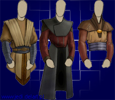
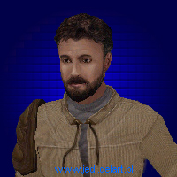
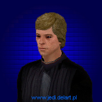
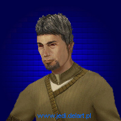
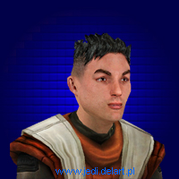
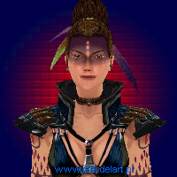
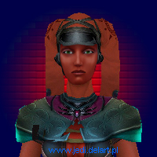
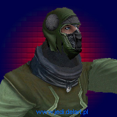
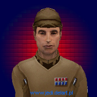

|

Jaden Korr
W grze Jedi Academy gracz wciela siê w postaæ Jadena Korra.
Na pocz±tku gry nale¿y wybraæ swoj± rasê, p³eæ oraz wygl±d.
historia Jadena jest nie znana. Wiemy tylko to, ¿e w tajemniczych
okoliczno¶ciach sta³ siê posiadaczem miecza ¶wietlnego i w³a¶nie
zamierza siê nauczyæ obs³ugi tej "zabawki"
Bronie:
Miecz ¶wietlny wedle w³asnego gustu i sposobu walki
Pistolet DL-44
Dodatkowe bronie wybierane przed misjami lub w nich zdobyte

Kyle Katarn
Kyle Katarn - bochater dwóch poprzednich gier z serii Jedi Knight.
Niegdy¶ najemnik, nastêpni jedi. Po problemach z Ciemn± Stron± Mocy
odda³ swój miecz ¶wietlny Luke'owi Skywakerowi. Chc±c zem¶ciæ siê
na Lordzie Desannie za uprowadzenie partnerki Jan Ors, znowu dobywa miecza
¶witlnego. Po uratowaniu galaktyki przed Desann'em oraz admira³em
Fyarr'em zaczyna szkoliæ padawanów w Akademii Luka Skywalkera. Jest
nauczycielem Jadena (Twoim) oraz Rosha
Bronie:
Niebieski miecz ¶wietlny
Pistolet Bryar
¦wietnie wytrenowane kung-fu

Luke Skywalker
Luke Skywalker jako m³odzieniec nale¿a³ do elitarnej grupy pilotów
Rebelii. Przeszed³ trening pos³ugiwania siê moc± i mieczem ¶wietlnym
u mistrza Yody. Po ¶mierci ojca zaj±³ siê nauczaniem innych w swojej
Akademii Jedi na Yavin 4
Bronie:
Zielony miecz ¶wietlny

Mistrz Jedi
Jeden z kilku mistrzów jedi w
Akademii Jedi. Zajmuje siê trenowaniem innych Jedi.
Bronie:
Zielony dwustronny miecz ¶wietlny

Rosh Penin
Razem z nim trenujesz pod okiem Kyle'a
Katarna. Jest zawsze bardzo podekscytowany tym, ¿e bêdzie Jedi i ¿e
zobaczy Luke'a Skywalkera.
W czasie gry Rosh zaginie i przejdzie pranie mózgu. Stanie siê Dark Jedi,
bêdzie s³ug± braci Kothos oraz Tavion.
Pod koniec gry trzeba bêdzie zadecydowaæ, czy zabiæ Rosha jako zdrajcê
i byæ Dark Jedi, czy uratowaæ Rosha jako przyjaciela i udowodniæ
Kyle'owi, ¿e jest siê godnym tytu³u Jedi Knight.
Bronie:
¯ó³ty miecz ¶wietlny
Gdy Rosh jest na Ciemnej stronie Mocy u¿ywa czerwonego miecza ¶wietlnego

Tavion
W grze Jedi Outcast - s³uga Lorda Desanna.
Kyle darowa³ jej ¿ycie, jednak ona po jego ¶mierci swojego Ciemnego
Pana zosta³a przywódczyni± tajemniczego kultu, który wysysa moc z
miejsc gdzie jest du¿o jej ¶ladów (grób Jedi, zamek Vadera). Zamierza
wskrzesiæ Sitha zmar³ego 4000 lat przed akcj± gry, znanego jako Marka
Ragnos.
Wtedy razem zniszczyli by Jedi i zapanowali nad ¶wiatem.
Jej "praw± rêk±" jest Alora, która zajmuje siê
"organizacj±" spisku.
Bronie:
Czerwony miecz ¶wietlny
Scepter
Chwa³a Sithów

Alora
Jest s³ug± Tavion, werbuje cz³onków
kultu i szkoli ich.
Walczy siê z ni± dwa razy podczas gry. Niewiele o niej wiadomo :P
Bronie:
Pistolet DL-44
Pierwsza walka: czerwony miecz ¶wietlny
Druga walka: dwa czerwone miecze ¶wietlne

Cz³onek kultu
Podczas rozgrywki na pewno spotkasz
ich bardzo wielu, u¿ywaj±cych wielu broni. Niektórzy potrafi± nawet u¿ywaæ
mocy.
S± werbowani przez Tavion i Alorê, skuszeni wizj± pokonania Jedi i zaw³adniêcia
¶wiatem
Bronie:
Wiêkszo¶æ

Oficer imperium
Pracuj± tylko w bazach imperium i czêsto
posiadaj± klucze, które otwieraj± jakie¶ drzwi. Zabicie oficerów czêsto
powoduje panikê w¶ród podw³adnych. Oficjalnie nie s± powi±zani z
kultem, ale pozwalaj± na przebywanie kultystów w swoich bazach
Bronie:
Pistolet DL-44
lub Karabin E-11
Oczywi¶cie w grze jest o wiele wiêcej
przyjació³ i jeszcze wiêcej wrogów, ale s± oni mniej znacz±cy dla
fabu³y gry.
do góry
|